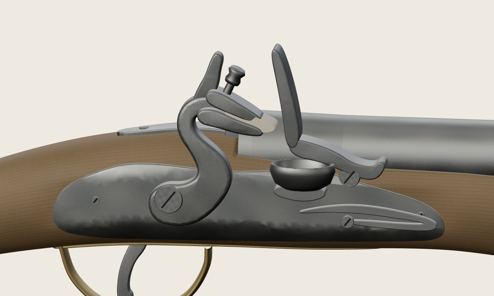
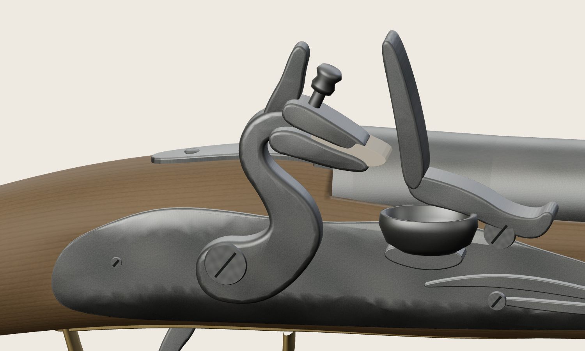
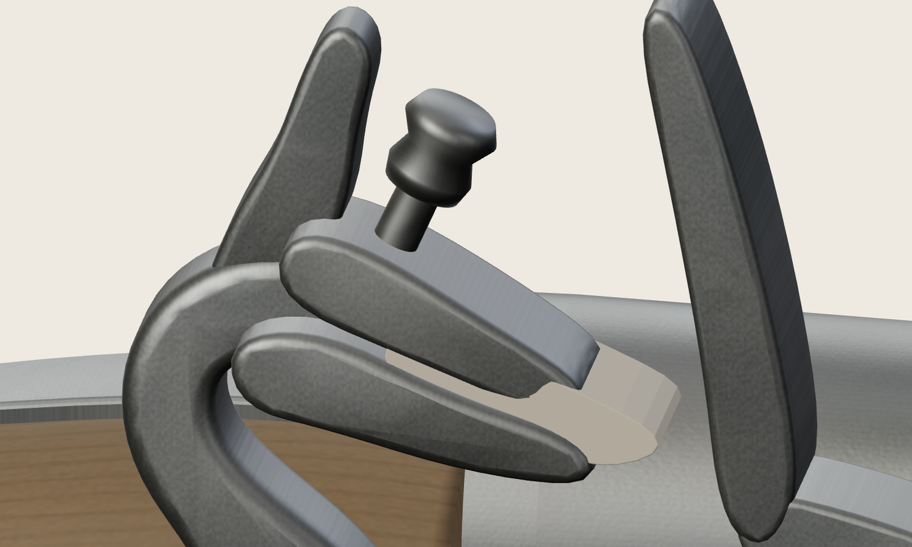
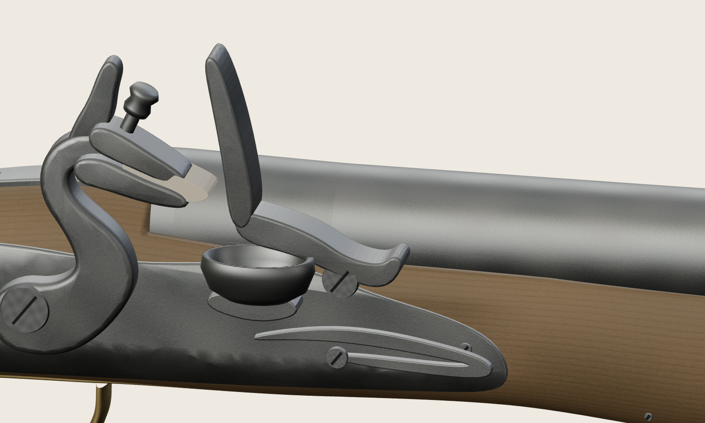
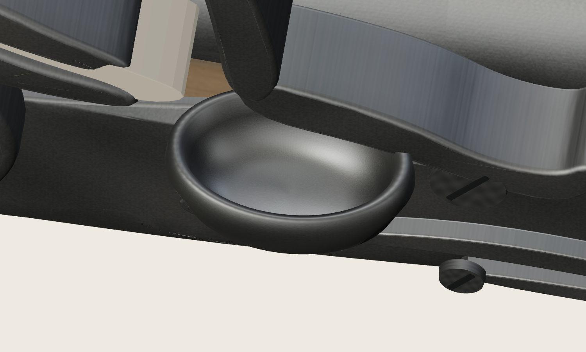
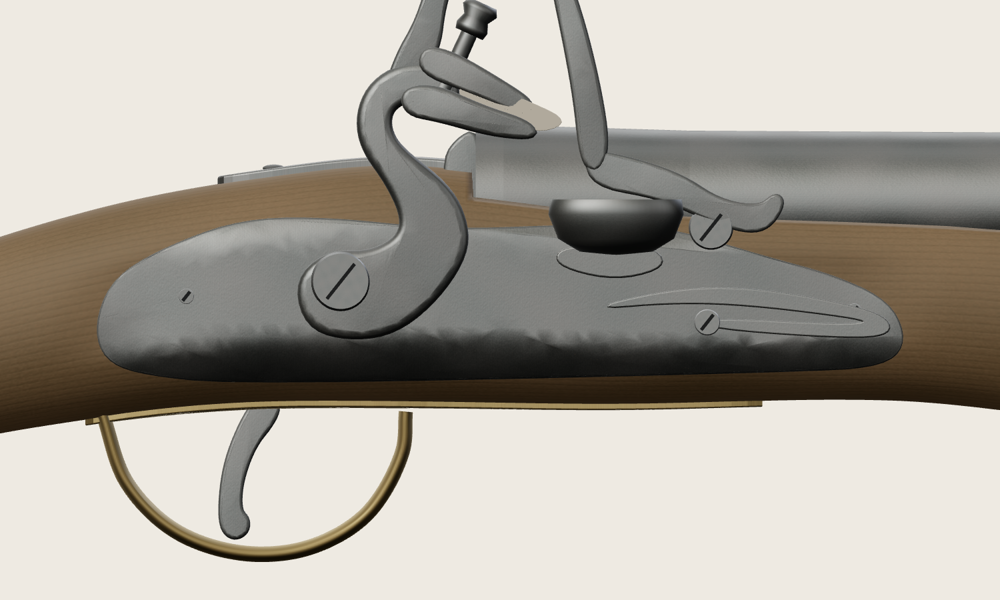
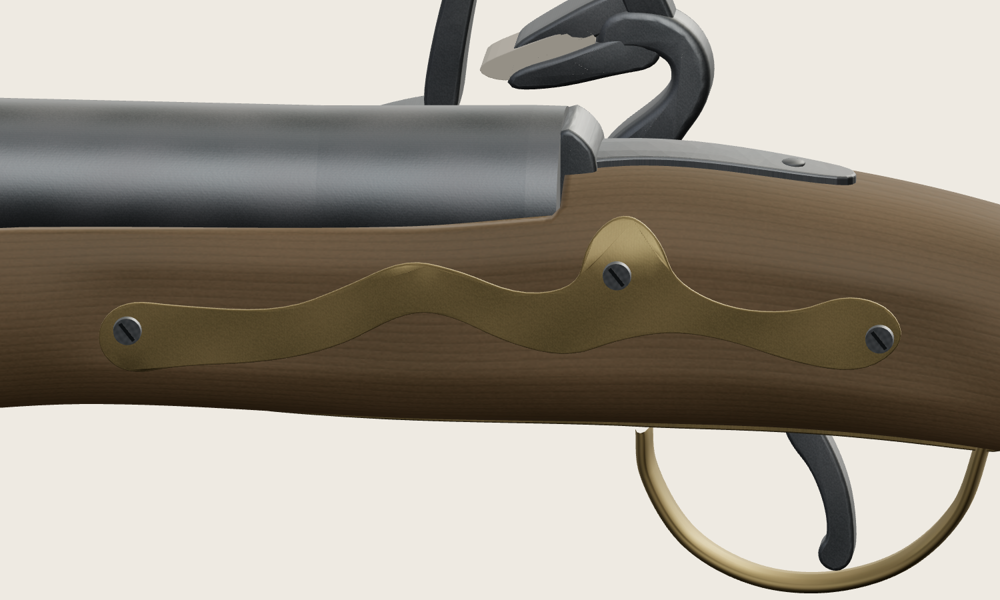
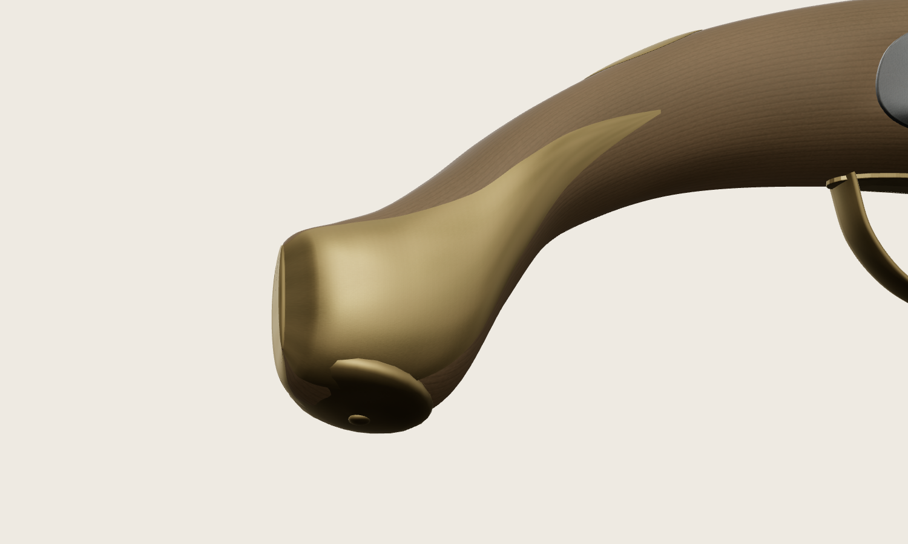
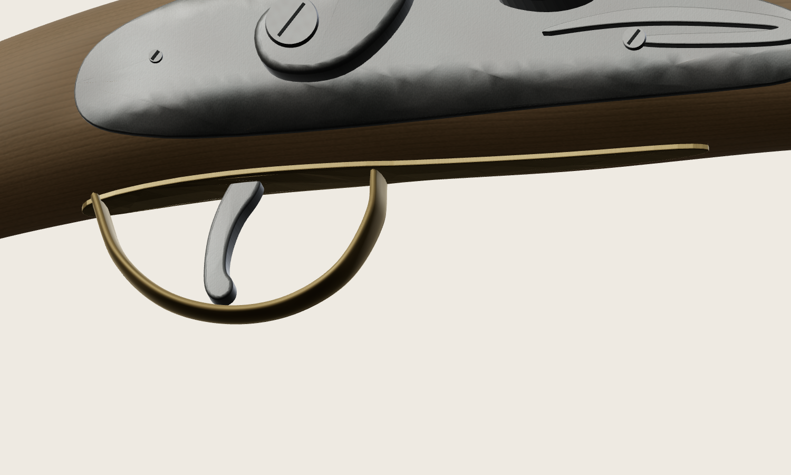

Пистолет 1798/1804
Точечная визуальная доработка
Сравнение наружного облика: источник → версия на начало задачи → уточнённый GLB. Основная длина, геометрия ствола, силуэт ложи и древесные карты сохранены.
Это статическая музейная визуализация. Пункты о работоспособной кинематике, воспламенении и функциональном согласовании винтов не приняты. Обмер конкретного экземпляра и независимая экспертиза отсутствуют.
Рисунок 128 показывает базовый образец 1798 года. Длину его ствола нельзя сравнивать с укороченной моделью. Фрагменты источника масштабированы отдельно для чтения формы; рендеры «до / после» используют одинаковые камеры и свет, без скрытия соседних деталей.
Отчёт · Проверка сохранённых частей · Метрики · Открыть экспонат в приложении
| Метрика | До | После |
|---|
| Треугольники | 131006 | 127022 |
| Meshes | 64 | 64 |
| Draw calls, hero | 65 | 65 |
| GLB, байты | 6702712 | 6503372 |
Замок целиком
Снижена визуальная масса наружных деталей. Работоспособность механизма не проверялась.
Маковская · рис. 128 · фрагмент
Текущая модель до этого прохода Уточнённая модель
Уточнённая модель
Курок
Более тонкая шейка и компактное основание; поперечный объём сохранён.
Маковская · рис. 128 · фрагмент
Текущая модель до этого прохода Уточнённая модель
Уточнённая модель
Губки и кремень
Губки короче и тоньше, головка винта проще. Кремень — авторское дополнение; на фото музейного прототипа его нет.
Маковская · рис. 128 · фрагмент
Текущая модель до этого прохода Уточнённая модель
Уточнённая модель
Батарея
Наклонённый наружный силуэт вместо высокой вертикальной пластины. Поза статическая.
Маковская · рис. 128 · фрагмент
Текущая модель до этого прохода Уточнённая модель
Уточнённая модель
Полка
Мелкая асимметричная выемка вместо глубокой чашки. Вид сверху по рисунку не подтверждён.
Маковская · рис. 128 · фрагмент
Текущая модель до этого прохода Уточнённая модель
Уточнённая модель
Замочная доска
Контур ниже и компактнее; уменьшены округлый затылок и переднее продолжение.
Маковская · рис. 128 · фрагмент
Текущая модель до этого прохода Уточнённая модель
Уточнённая модель
Боковая накладка
Площадь поверхности уменьшена на 18,7%. Сохранена змеевидная форма; убран прямоугольный след в дереве.
Маковская · рис. 128 · фрагмент
Текущая модель до этого прохода Уточнённая модель
Уточнённая модель
Окончание рукояти
Боковые оболочки уменьшены примерно на 45% по площади. Сам силуэт дерева сохранён.
Маковская · рис. 128 · фрагмент
Текущая модель до этого прохода Уточнённая модель
Уточнённая модель
Спусковая скоба
Небольшая асимметрия контура и сечения. Спуск сохранён: недостаточно оснований для дальнейшей правки.
Маковская · рис. 128 · фрагмент
Текущая модель до этого прохода Уточнённая модель
Уточнённая модель Все контрольные ракурсы
 01-right
01-right 02-left
02-left 03-top
03-top 04-bottom
04-bottom 05-front
05-front 06-rear
06-rear 07-front-3-quarter
07-front-3-quarter 08-rear-3-quarter09-lock10-cock
08-rear-3-quarter09-lock10-cock 11-frizzen-pan
11-frizzen-pan 12-breech
12-breech 13-muzzle14-sideplate15-trigger
13-muzzle14-sideplate15-trigger 16-ramrod
16-ramrod 17-ramrod-pipes
17-ramrod-pipes 18-foreend19-buttcap
18-foreend19-buttcap 20-stock-cross-section-area
20-stock-cross-section-area 21-left-3-quarter22-jaws-flint23-frizzen24-pan
21-left-3-quarter22-jaws-flint23-frizzen24-pan 25-spring26-lockplate
25-spring26-lockplate